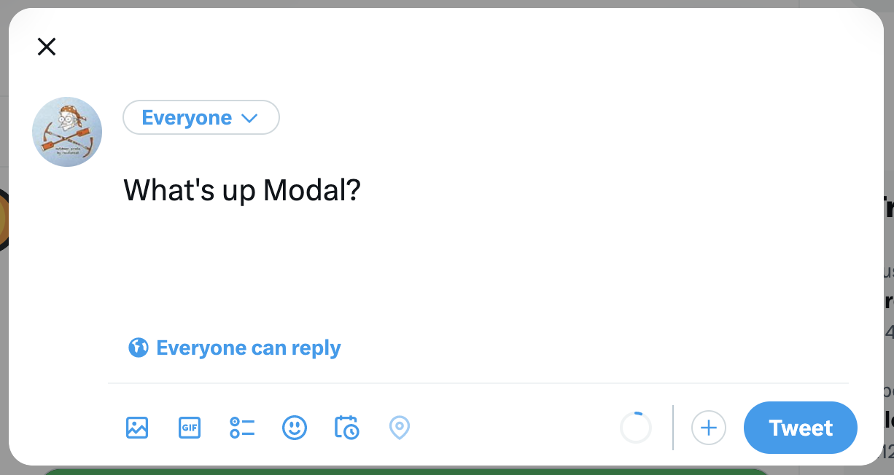
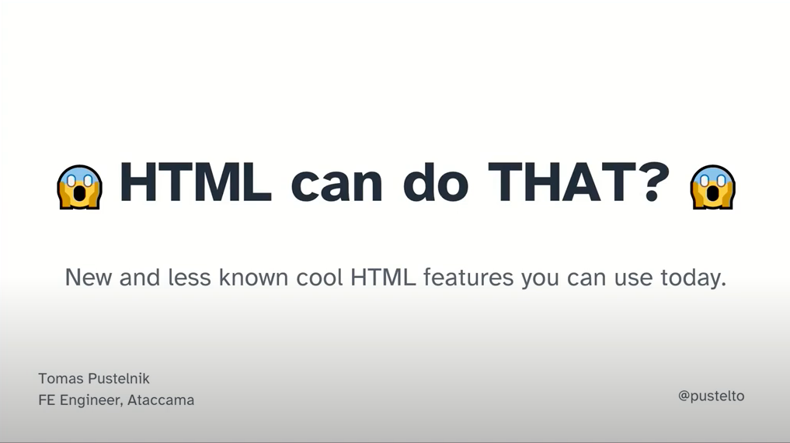
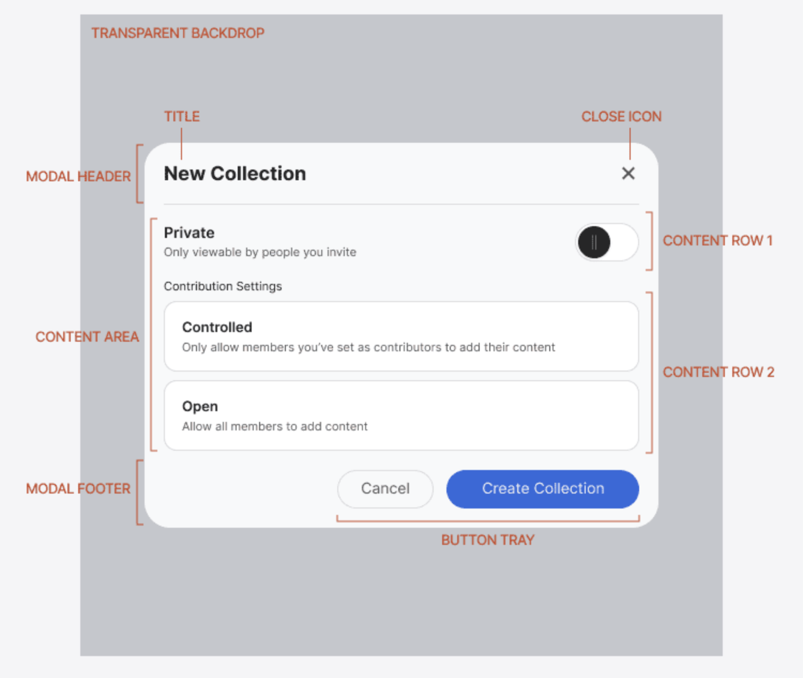
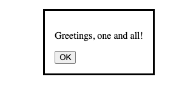
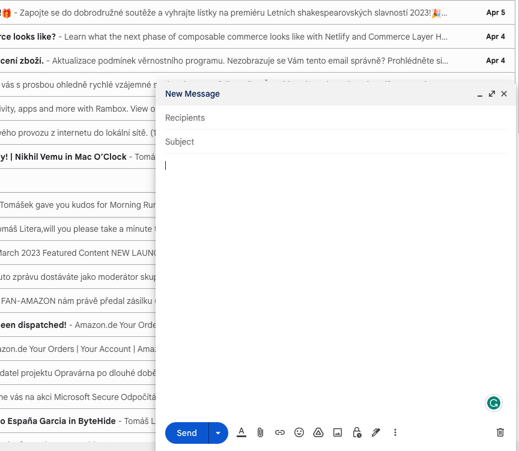
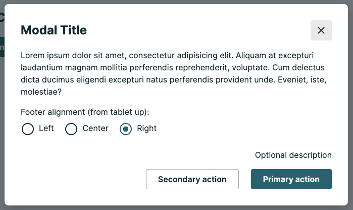
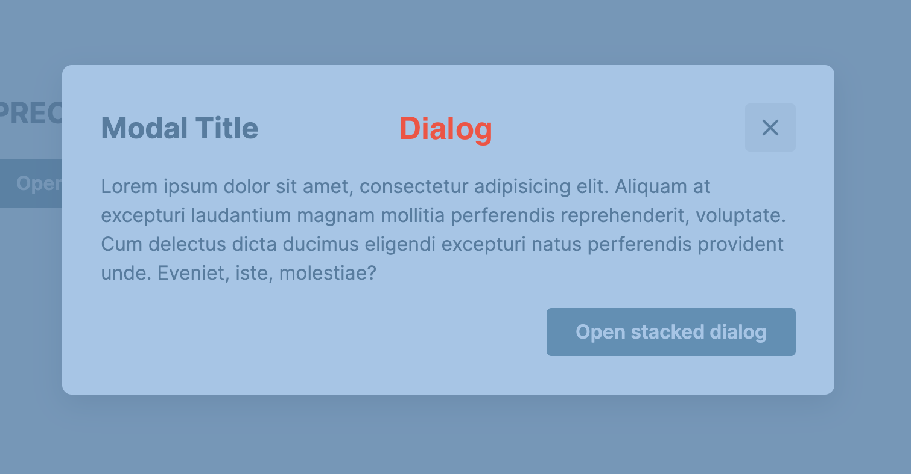
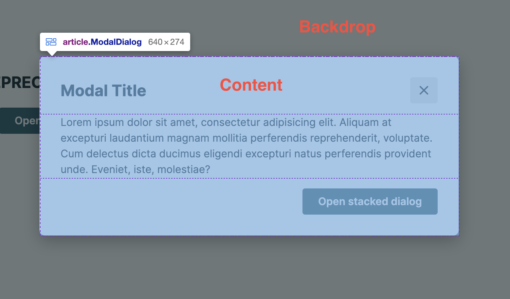
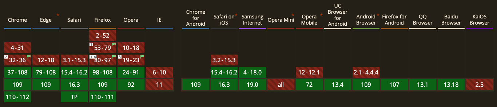
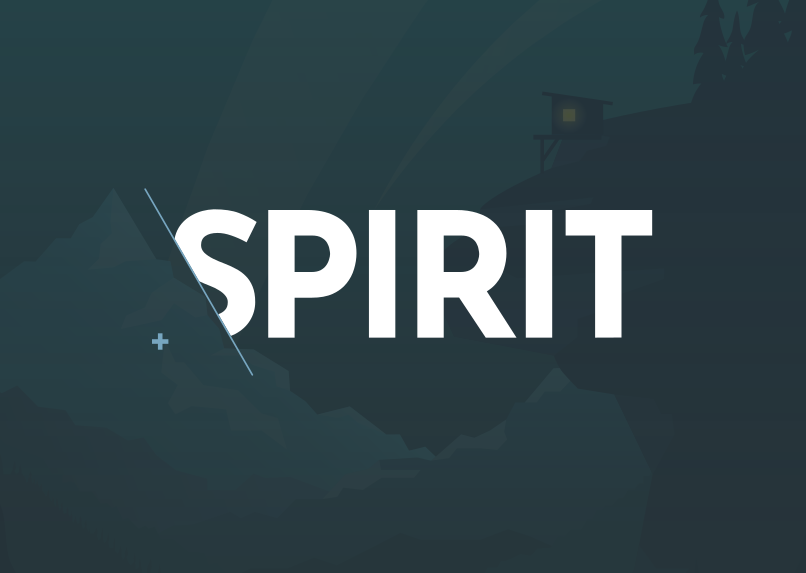

<img src="static/frontendisti.jpg" width="150" /> ## Dialog Element - Don't reinvent the wheel with modals! [Tomas Litera](https://literat.dev) <aside class="notes"> - pozdravit - představit se </aside> ---  <aside class="notes"> - dialogy jsou všude - řeší interakci s uživatelem - mají různá jména, modal, dailog, drawev, offcanvas, popup - otázka do pléna: kdo už někdy implementoval modal - a jaké jsou nějvětší potíže? - ukážeme si jak si život zjednoduššit </aside> ---  <a href="https://www.youtube.com/watch?v=rM1emdWTr5Q">https://www.youtube.com/watch?v=rM1emdWTr5Q</a> <aside class="notes"> - k použití nás motivovala přednáška od Tomáše Pustelníka </aside> --- ### 🫀 Anatomy  <aside class="notes"> - jak vypadá dnešní modal z pohledu designu a co umí - interakce, tlačítka, zavírání - zavírání na klik, escape, backdrop </aside> --- ### Dialog <pre class="r-stretch"> <code data-line-numbers="2,7"> <dialog open> <p>Greetings, one and all!</p> <form method="dialog"> <button>OK</button> </form> </dialog> </code> </pre> <aside class="notes"> - seznamte se, nový dialog element - v základu nemá skoro žádné atributy </aside> ---  <aside class="notes"> - je v takzvaném nemodálním stavu </aside> --- ### Non-modal Dialog  <aside class="notes"> - znamená to, že je povolená interakce se stránkou - nejdříve jsem neznal moc použití, ale pak to začalo dávat smysl - různé panely ve složitějších aplikacích alá figma a dalších - zde ukázka z gmailu </aside> --- ## Modal Dialog  <aside class="notes"> - pak tu máme dialog v modální stavu - interakce se zbytkem stránky je zakázaná </aside> --- ## 🥖 Baked in Features <aside class="notes"> - co jsou teda ty skvělé věci, co nám ten element přináší? </aside> --- ## Forms <pre class="r-stretch"> <code data-line-numbers="5,7,8"> <main> <button id="open">Open dialog</button> <dialog> <form method="dialog"> <h1>Hello, would you like to do something cool?<h1/> <button id="close" value="cancel">Go to hell!</button> <button id="confirm" value="confirm">Let's go!</button> </dialog> </main> </code> </pre> <aside class="notes"> - form method dialog - použití formulářů </aside> --- <pre class="r-stretch"> <code data-line-numbers="8,12,13"> const showButton = document.getElementById('showDialog'); const favDialog = document.getElementById('favDialog'); const outputBox = document.querySelector('output'); // "Show the dialog" button opens the <dialog> modally showButton.addEventListener('click', () => { favDialog.showModal(); }); // "Confirm" button of form triggers "close" on dialog because of [method="dialog"] favDialog.addEventListener('close', () => { outputBox.value = `ReturnValue: ${favDialog.returnValue}.`; }); </code> </pre> <aside class="notes"> - jak získat návratovou hodnotu </aside> --- ## Native Backdrop pseudo-element <pre> <code data-trim> .Modal::backdrop { background-color: #333333; visibility: visible; opacity: 1; } </code> </pre> <aside class="notes"> - nativní podporu pro backdrop </aside> --- ## 🚪 Closing using Escape key ✅ <aside class="notes"> - automatické zavírání přes escape klávesu </aside> --- ## 🤷 Something is missing <aside class="notes"> - ale něco nám stále chybí </aside> --- ## 🚪 Closing using Backdrop  <aside class="notes"> - a to zavírání kliku na backdrop - zde pozor na implementaci pro rozdílové oblasti </aside> ---  <aside class="notes"> - dialog má celý top layer, je potřeba se zaměřit na vnitřek </aside> --- ## 🛠️ JS API <code>.show()</code> <code>.showModal()</code> <pre>::backdrop</pre> <code>.close()</code> <pre>dialog.returnValue</pre> <aside class="notes"> - teď už jenom zrekapitulujeme JS API - ta první metoda otevírá nemodální stav </aside> --- ### 📯 Events <code>close</code> <pre>dialog.returnValue</pre> <a href="https://developer.mozilla.org/en-US/docs/Web/API/HTMLDialogElement/close_event">https://developer.mozilla.org/en-US/docs/Web/API/HTMLDialogElement/close_event</a> <code>cancel</code> <a href="https://developer.mozilla.org/en-US/docs/Web/API/HTMLDialogElement/cancel_event">https://developer.mozilla.org/en-US/docs/Web/API/HTMLDialogElement/cancel_event</a> <aside class="notes"> - a události </aside> --- <pre class="r-stretch"> <code data-line-numbers="16,17,21,22"> <script> (() => { const updateButton = document.getElementById("updateDetails"); const closeButton = document.getElementById("close"); const dialog = document.getElementById("favDialog"); dialog.returnValue = "favAnimal"; function openCheck(dialog) { if (dialog.open) { console.log("Dialog open"); } else { console.log("Dialog closed"); } } // Update button opens a modal dialog updateButton.addEventListener("click", () => { dialog.showModal(); openCheck(dialog); }); // Form close button closes the dialog box closeButton.addEventListener("click", () => { dialog.close("animalNotChosen"); openCheck(dialog); }); })(); </script> </code> </pre> <aside class="notes"> - zde je vidět, jak se na ně navěsit </aside> --- ## ⚛️ React <aside class="notes"> - a nesmíme zapomenout na React, kde nám tento element také hodně pomůže </aside> --- <pre class="r-stretch"> <code data-line-numbers="3,7,9,14,16,18,20,23"> function Modal({ children, open, onRequestClose }) { const dialogRef = React.useRef(null); React.useEffect(() => { const dialogNode = dialogRef.current; if (open) { dialogNode.showModal(); } else { dialogNode.close(); } }, [open]) React.useEffect(() => { const dialogNode = dialogRef.current const handleCancel = (event) => { event.preventDefault(); onRequestClose(); } dialogNode.addEventListener('cancel', handleCancel); return () => { dialogNode.removeEventListener('cancel', handleCancel); } }, [onRequestClose]); return <dialog ref={dialogRef}>{children}</dialog>; } </code> </pre> --- ### 🪝 And use hooks <ul> <li class="fragment">useDialog - Dialog state</li> <li class="fragment">useOnClickOutside - Backdrop click</li> <li class="fragment">useCancelEvent - Escape key</li> </ul> <aside class="notes"> - celou implementaci lze krásně rozdělit do hooků </aside> --- <pre> <code> <script type="text/template"> <Dialog isOpen={isOpen} onClose={onClose} > {children} </Dialog> </script> </code> </pre> <aside class="notes"> - a pak už je to jedoduchá komponenta </aside> --- ## 🥡 Takeaways <aside class="notes"> - co si z toho teda odnést </aside> --- ### ➕ Advantages <ul> <li class="fragment">Minimal Javascript</li> <li class="fragment">accesibility baked in</li> <li class="fragment">::backdrop pseudo-element</li> <li class="fragment">form method="dialog"</li> <li class="fragment">Escape key closes the dialog</li> </ul> --- ### ➖ Disadvantages <ul> <li class="fragment">fancy features require more JS</li> <li class="fragment">clicking on backdrop does not close the dialog</li> <li class="fragment">some accessibility issue regarding autofocus</li> </ul> --- ### 🧑🦼 Accessibility  <aside class="notes"> - již nyní se dá používat ve všech prohlížečích </aside> --- # 🤝 Credit Adam Kudrna + Kateřina Dlouhá CZ: <a href="https://frontend.garden/element-dialog-nevymyslej-znovu-modal">https://frontend.garden/element-dialog-nevymyslej-znovu-modal</a> EN: <a href="https://literat.dev/blog/2023-04-11/dialog-element-don't-reinvent-the-wheel-with-modals!/">https://literat.dev/blog/2023-04-11/dialog-element-don't-reinvent-the-wheel-with-modals!/</a> <aside class="notes"> - a chci poděkovat za spolupráci na článcích </aside> --- # 👋 No robot (AI) were harmed while fabricating these slides and posts. <a href="https://dialog-do-not-reinvent-modal.netlify.app/">https://dialog-do-not-reinvent-modal.netlify.app/</a> <aside class="notes"> - děkuji za pozornost </aside> ---  <a href="https://github.com/lmc-eu/spirit-design-system">https://github.com/lmc-eu/spirit-design-system</a>